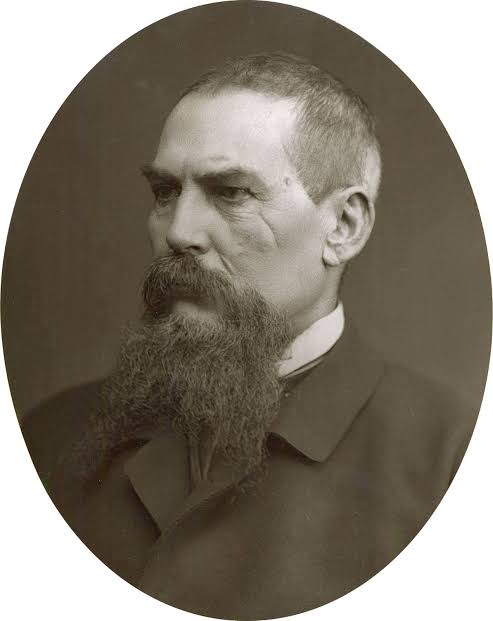

رچرڈ برٹن
سر رچرڈ فرانسس برٹن (1821 تا 1890) انیسویں صدی کے ایک مشہور برطانوی سیاح، مستشرق، مترجم، فوجی افسر اور جاسوس تھے جنہوں نے برصغیر، مشرقِ وسطیٰ اور افریقہ کے کئی علاقوں کی ثقافت اور تاریخ پر اہم کام کیا۔

1
کرسی پر بیٹھا نوجوان رچرڈ برٹن ہاتھ میں کتاب لیے کیمرے کی طرف دیکھ رہا ہے۔

2
نوجوان رچرڈ برٹن کی قریبی تصویر، بڑی مونچھ اور چھوٹی داڑھی کے ساتھ۔

3
رچرڈ برٹن گہرے کمبل میں لپٹا ہوا فرش پر بیٹھا ہے۔

4
RICHARD BURTON. (PRESENTED TO HIM, WITH HIS WIFE'S PORTRAIT, AS A WEDDING GIFT.) By Louis Desanges.
رچرڈ برٹن (یہ تصویر اسے اس کی بیوی کی تصویر کے ساتھ شادی کے تحفے کے طور پر دی گئی تھی) از لوئی دیساںژ۔

5
رچرڈ برٹن پہلو سے بیٹھا ہوا لکڑی کی دیوار کے سامنے دور دیکھ رہا ہے۔

6
بڑھاپے میں رچرڈ برٹن کی پہلو سے لی گئی تصویر، داڑھی اور مونچھ سفید ہو چکی ہیں۔

7
سفید بالوں اور لمبی داڑھی والے رچرڈ برٹن کوٹ پہنے پہلو سے نظر آ رہے ہیں۔

8
رچرڈ برٹن اونچی ٹوپی اور لمبا کوٹ پہنے چھڑی کے ساتھ کھڑا ہے۔

9
رچرڈ برٹن مشرقی لباس اور ٹوپی پہنے قالین پر چوکڑی مارے بیٹھا ہے۔

10
SIR RICHARD BURTON IN 1879. By Madame Gutmansthal de Benvenuti (Trieste).
سر رچرڈ برٹن 1879ء میں۔ از میڈم گٹمانستھال دی بینوینوتی (ٹریئیسٹے)۔

11
RICHARD BURTON IN HIS TENT IN AFRICA.
رچرڈ برٹن افریقہ میں اپنے خیمے میں۔

12
ISABEL BURTON AS A BRIDE. By Louis Desanges.
ازابیل برٹن دلہن کے روپ میں۔ از لوئی دیساںژ۔

13
Richard F. Burton الحاج عبدالله
رچرڈ ایف برٹن، الحاج عبداللہ۔

14
Ape
ایپ (مصور کا دستخط)۔

15
سفید قمیص پہنے رچرڈ برٹن کرسی پر بیٹھا ہے، داڑھی آدھی سفید ہے۔

16
سفید بالوں اور لمبی سفید داڑھی والے بزرگ رچرڈ برٹن کی پہلو سے تصویر۔

17
سیاہ ٹوپی پہنے بزرگ رچرڈ برٹن کی پہلو سے تصویر۔

18
رچرڈ برٹن عرب لباس اور بڑی پگڑی پہنے سامنے دیکھ رہا ہے۔

19
SIR RICHARD BURTON, LADY BURTON, AND DR. GRENFELL BAKER. Photograph taken in 1889 by G. N. Miller, at Folkestone.
سر رچرڈ برٹن، لیڈی برٹن اور ڈاکٹر گرینفیل بیکر۔ تصویر 1889ء میں جی این ملر نے فوکسٹون میں لی۔

20
کھانے کی میز پر بیٹھے رچرڈ برٹن، ایک مرد اور دو خواتین کا گروپ پورٹریٹ۔

21
بسترِ مرگ پر لیٹے رچرڈ برٹن کے سینے پر صلیب اور تسبیح رکھی ہے، پس منظر میں نقشہ نظر آتا ہے۔

22
ٹریسٹے کے باغ میں چھڑی تھامے کھڑے بوڑھے رچرڈ برٹن کا مکمل پورٹریٹ۔

23
لمبی سفید داڑھی والے رچرڈ برٹن کا قریبی چہرے کا پورٹریٹ۔

24
جوانی میں رچرڈ برٹن کا پہلو سے لیا گیا پورٹریٹ، چہرے پر زخم کا نشان نمایاں ہے۔

25
RICHARD BURTON AND HIS SISTER, LADY STISTED.
رچرڈ برٹن اور ان کی بہن، لیڈی اسٹسٹڈ۔

26
اپنے مطالعے کے کمرے میں کتابوں سے گھری میز پر پیٹھ کر کے بیٹھے برٹن لکھ رہے ہیں۔

27
ٹریسٹے کی بندرگاہ، لائٹ ہاؤس اور لنگر انداز جہازوں کا وسیع منظر۔

28
اسٹوڈیو میں کرسی کے سہارے کھڑے نوجوان رچرڈ برٹن کا پورٹریٹ۔

29
وفات کے بعد تکیے پر لیٹے برٹن کا پہلو سے چہرہ، پاس سفید گلِ بہار رکھے ہیں۔

30
برٹن کے چہرے، ہاتھ اور پاؤں کے پلاسٹر کے سانچے (ڈیتھ ماسک)۔

31
کھانے کے کمرے میں میز پر بیٹھے برٹن اور ان کی اہلیہ، دیوار پر تصویریں آویزاں ہیں۔

32
درخت کے نیچے بیٹھے ٹوپی پہنے برٹن کے ساتھ کھڑی ان کی اہلیہ اشارہ کر رہی ہیں۔

33
باغ میں بینچ پر بیٹھی لیڈی برٹن اور پیچھے کھڑے سرخ ٹوپی پہنے برٹن۔

34
لیڈی ازابیل برٹن کا پورٹریٹ، گلے میں موتیوں کا ہار اور سر پر جالی دار ٹوپی ہے۔

35
F. Rumpelmann
ایف۔ رمپل مین

36
مصور لیٹن کی بنائی ہوئی رچرڈ برٹن کی پہلو سے مصورانہ تصویر۔

37
مصور لیٹچفورڈ اپنے اسٹوڈیو میں برٹن کی بڑی قدِ آدم تصویر کے سامنے بیٹھا ہے۔

38
بیضوی فریم میں بوڑھے رچرڈ برٹن کا وڈبری پورٹریٹ۔